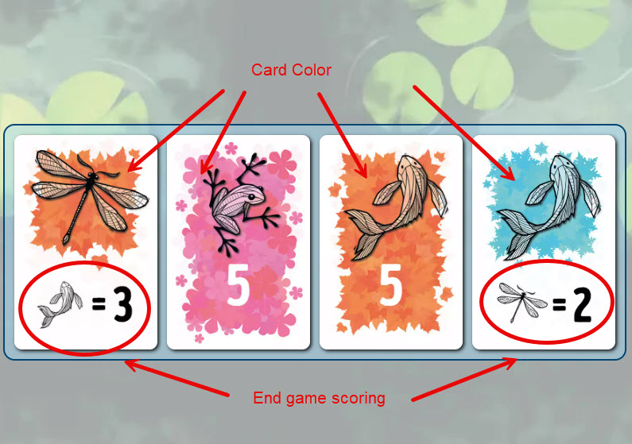
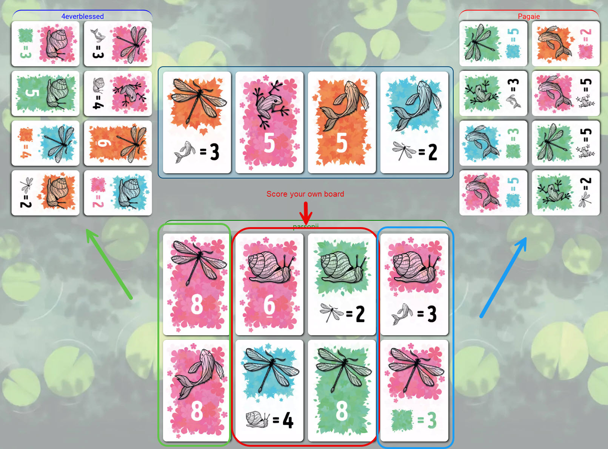

Symbiose
Board Game Arena 官方规则文档
OVERVIEW
Game consists of 8 rounds, during which you swap a card from your board with a card in the River (a pool of cards that everyone draws from).
Cards come in 4 colors and show 1 of 4 critters commonly found around a pond (frog, snail, dragonfly, fish). Each also either depicts a fixed card value or a variable value (such as 2 points per dragonfly or 4 points per orange card). You will always gain points on the fixed value cards. The value of the other cards is determined both by meeting the depicted condition AND the card's location on your board ~ some will score points for the cards on your own board, and some will score points for the cards on other players' boards or the River.
You'll need to keep a close eye on what's happening around the table ~ What can you score on the boards around you, and what are the other players trying to score from yours? Clever swapping and luck of the draw create an exciting tension.
GAME PLAY
You begin with a tableau of face-down cards. On your 1st turn, flip one face up. There is no swap on the 1st turn.
On subsequent turns, first select a card in the River, then select a face-up or face-down card from your board to swap with it. When you select a River card, that is the card that will be swapped. If you don't want to use that card you must deselect it before selecting a different card.
~ If the card on your board was face DOWN, that card is added to the River face up, and the River card you selected takes its place on your board.
~ If the card on your board was face UP, that card is added to the River face up, and the River card you selected takes its place on your board. THEN you must flip a face-down card on your board face up.
Game ends after 8 turns.

Scoring
Score the points shown on your fixed-value cards no matter where they are located on your board.
Your other cards score depending on their position on your board:
LEFT COLUMN, LEFT PLAYER ~ Cards in your left column score points for the 8 cards in the player board to your left.
RIGHT COLUMN, RIGHT PLAYER ~ Cards in your right column score points for the 8 cards in the player board to your right.
CENTER COLUMNS, YOUR BOARD ~ Cards in the middle 2 columns of your board score score points for all of the cards on your own board.
EXAMPLE: The 2 cards on the left side of your board are an 8-point card and one that scores 2 points per dragonfly. 8 points is added to your score for the 8-point card, and the other scores 2 points for every dragonfly ON THE PLAYER BOARD TO YOUR LEFT.
The player with the highest point wins.

2-PLAYER RULES (Duel Mode)
The River has 8 cards, but 4 are face up and 4 are face down. However, you can choose any of the 8 cards on your turn.
On your turn, swap 1 of your cards with the River per the usual rules.
SCORING ~ The River acts like a third player for scoring purposes. Your column closest to the River will score points for the River cards, plus you will score the cards on your opponent's board and your own board, per the usual rules.
TEAM MODE
You work together with the person sitting across from you to score the most combined points. Instead of scoring points from your opponents' cards, all of your points will come from each others' boards. Score your side columns based on your teammate's board, and score your own board as usual.